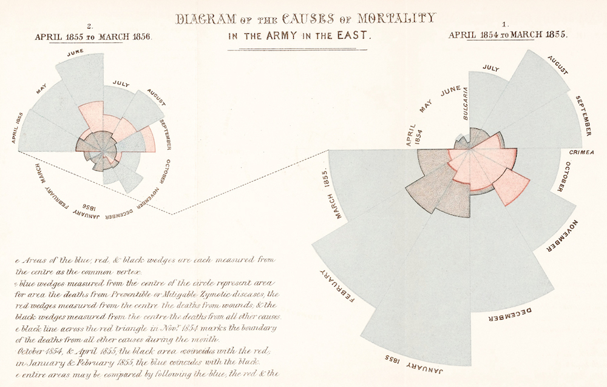

Data visualization in Python (pyplot)#
Looking ahead: Weeks 3-4#
In week 3, we’ll dive deep into data visualization.
How do we make visualizations in Python?
What principles should we keep in mind?
In week 4, we’ll work on managing and cleaning our data.
How do I deal with missing values?
What are some basic ways to describe my data?
I view both these weeks as integral to Exploratory Data Analysis in Python.
Goals of this lecture#
What is data visualization and why is it important?
Introducing
matplotlib.Univariate plot types:
Histograms (univariate).
Scatterplots (bivariate).
Bar plots (bivariate).
Introduction: data visualization#
What is data visualization?#
Data visualization refers to the process (and result) of representing data graphically.
For our purposes today, we’ll be talking mostly about common methods of plotting data, including:
Histograms
Scatterplots
Line plots
Bar plots
Why is data visualization important?#
Exploratory data analysis
Communicating insights
Impacting the world
Exploratory Data Analysis: Checking your assumptions#
Communicating Insights#
Impacting the world#
Florence Nightingale (1820-1910) was a social reformer, statistician, and founder of modern nursing.

Impacting the world (pt. 2)#
John Snow (1813-1858) was a physician whose visualization of cholera outbreaks helped identify the source and spreading mechanism (water supply).

Introducing matplotlib#
Loading packages#
Here, we load the core packages we’ll be using.
We also add some lines of code that make sure our visualizations will plot “inline” with our code, and that they’ll have nice, crisp quality.
import numpy as np
import pandas as pd
import matplotlib.pyplot as plt
import scipy.stats as ss
%matplotlib inline
%config InlineBackend.figure_format = 'retina'
What is matplotlib?#
matplotlibis a plotting library for Python.
Note that seaborn (which we’ll cover soon) uses matplotlib “under the hood”.
What is pyplot?#
pyplotis a collection of functions withinmatplotlibthat make it really easy to plot data.
With pyplot, we can easily plot things like:
Histograms (
plt.hist)Scatterplots (
plt.scatter)Line plots (
plt.plot)Bar plots (
plt.bar)
Example dataset#
Let’s load our familiar Pokemon dataset, which can be found in data/pokemon.csv.
df_pokemon = pd.read_csv("data/pokemon.csv")
df_pokemon.head(3)
| # | Name | Type 1 | Type 2 | Total | HP | Attack | Defense | Sp. Atk | Sp. Def | Speed | Generation | Legendary | |
|---|---|---|---|---|---|---|---|---|---|---|---|---|---|
| 0 | 1 | Bulbasaur | Grass | Poison | 318 | 45 | 49 | 49 | 65 | 65 | 45 | 1 | False |
| 1 | 2 | Ivysaur | Grass | Poison | 405 | 60 | 62 | 63 | 80 | 80 | 60 | 1 | False |
| 2 | 3 | Venusaur | Grass | Poison | 525 | 80 | 82 | 83 | 100 | 100 | 80 | 1 | False |
Histograms#
What are histograms?#
A histogram is a visualization of a single continuous, quantitative variable (e.g., income or temperature).
Histograms are useful for looking at how a variable distributes.
Can be used to determine whether a distribution is normal, skewed, or bimodal.
A histogram is a univariate plot, i.e., it displays only a single variable.
Histograms in matplotlib#
To create a histogram, call plt.hist with a single column of a DataFrame (or a numpy.ndarray).
Check-in: What is this graph telling us?
p = plt.hist(df_pokemon['Attack'])
Changing the number of bins#
A histogram puts your continuous data into bins (e.g., 1-10, 11-20, etc.).
The height of each bin reflects the number of observations within that interval.
Increasing or decreasing the number of bins gives you more or less granularity in your distribution.
### This has lots of bins
p = plt.hist(df_pokemon['Attack'], bins = 30)
### This has fewer bins
p = plt.hist(df_pokemon['Attack'], bins = 5)
Changing the alpha level#
The alpha level changes the transparency of your figure.
### This has fewer bins
p = plt.hist(df_pokemon['Attack'], alpha = .6)
Check-in:#
How would you make a histogram of the scores for Defense?
### Your code here
Solution#
p = plt.hist(df_pokemon['Defense'], alpha = .6)
Check-in:#
Could you make a histogram of the scores for Type 1?
### Your code here
Solution#
Not exactly.
Type 1is a categorical variable, so there’s no intrinsic ordering.The closest we could do is count the number of each
Type 1and then plot those counts.
Learning from histograms#
Histograms are incredibly useful for learning about the shape of our distribution. We can ask questions like:
Normally distributed data#
We can use the numpy.random.normal function to create a normal distribution, then plot it.
A normal distribution has the following characteristics:
Classic “bell” shape (symmetric).
Mean, median, and mode are all identical.
norm = np.random.normal(loc = 10, scale = 1, size = 1000)
p = plt.hist(norm, alpha = .6)
Skewed data#
Skew means there are values elongating one of the “tails” of a distribution.
Positive/right skew: the tail is pointing to the right.
Negative/left skew: the tail is pointing to the left.
rskew = ss.skewnorm.rvs(20, size = 1000) # make right-skewed data
lskew = ss.skewnorm.rvs(-20, size = 1000) # make left-skewed data
fig, axes = plt.subplots(1, 2)
axes[0].hist(rskew)
axes[0].set_title("Right-skewed")
axes[1].hist(lskew)
axes[1].set_title("Left-skewed")
Text(0.5, 1.0, 'Left-skewed')
Outliers#
Outliers are data points that differ significantly from other points in a distribution.
Unlike skewed data, outliers are generally discontinuous with the rest of the distribution.
Next week, we’ll talk about more ways to identify outliers; for now, we can rely on histograms.
norm = np.random.normal(loc = 10, scale = 1, size = 1000)
upper_outliers = np.array([21, 21, 21, 21]) ## some random outliers
data = np.concatenate((norm, upper_outliers))
p = plt.hist(data, alpha = .6)
plt.arrow(20, 100, dx = 0, dy = -50, width = .3, head_length = 10, facecolor = "red")
<matplotlib.patches.FancyArrow at 0x171cee250>
Check-in#
How would you describe the following distribution?
Normal vs. skewed?
With or without outliers?
p = plt.hist(df_pokemon['HP'], alpha = .6)

Check-in#
How would you describe the following distribution?
Normal vs. skewed?
With or without outliers?
p = plt.hist(df_pokemon['Sp. Atk'], alpha = .6)
Check-in#
In a somewhat right-skewed distribution (like below), what’s larger––the mean or the median?
p = plt.hist(df_pokemon['Sp. Atk'], alpha = .6)
Solution#
The mean is the most affected by skew, so it is pulled the furthest to the right in a right-skewed distribution.
p = plt.hist(df_pokemon['Sp. Atk'], alpha = .6)
plt.axvline(df_pokemon['Sp. Atk'].mean(), linestyle = "dashed", color = "green")
plt.axvline(df_pokemon['Sp. Atk'].median(), linestyle = "dotted", color = "red")
<matplotlib.lines.Line2D at 0x1721b7310>
Modifying our plot#
A good data visualization should also make it clear what’s being plotted.
Clearly labeled
xandyaxes, title.
Sometimes, we may also want to add overlays.
E.g., a dashed vertical line representing the
mean.
Adding axis labels#
p = plt.hist(df_pokemon['Attack'], alpha = .6)
plt.xlabel("Attack")
plt.ylabel("Count")
plt.title("Distribution of Attack Scores")
Text(0.5, 1.0, 'Distribution of Attack Scores')
Adding a vertical line#
The plt.axvline function allows us to draw a vertical line at a particular position, e.g., the mean of the Attack column.
p = plt.hist(df_pokemon['Attack'], alpha = .6)
plt.xlabel("Attack")
plt.ylabel("Count")
plt.title("Distribution of Attack Scores")
plt.axvline(df_pokemon['Attack'].mean(), linestyle = "dotted")
<matplotlib.lines.Line2D at 0x17255d3d0>
Scatterplots#
What are scatterplots?#
A scatterplot is a visualization of how two different continuous distributions relate to each other.
Each individual point represents an observation.
Very useful for exploratory data analysis.
Are these variables positively or negatively correlated?
A scatterplot is a bivariate plot, i.e., it displays at least two variables.
Scatterplots with matplotlib#
We can create a scatterplot using plt.scatter(x, y), where x and y are the two variables we want to visualize.
x = np.arange(1, 10)
y = np.arange(11, 20)
p = plt.scatter(x, y)
Check-in#
Are these variables related? If so, how?
x = np.random.normal(loc = 10, scale = 1, size = 100)
y = x * 2 + np.random.normal(loc = 0, scale = 2, size = 100)
plt.scatter(x, y, alpha = .6)
<matplotlib.collections.PathCollection at 0x1724163d0>

Check-in#
Are these variables related? If so, how?
x = np.random.normal(loc = 10, scale = 1, size = 100)
y = -x * 2 + np.random.normal(loc = 0, scale = 2, size = 100)
plt.scatter(x, y, alpha = .6)
<matplotlib.collections.PathCollection at 0x172109d90>
Scatterplots are useful for detecting non-linear relationships#
x = np.random.normal(loc = 10, scale = 1, size = 100)
y = np.sin(x)
plt.scatter(x, y, alpha = .6)
<matplotlib.collections.PathCollection at 0x17374df50>
Check-in#
How would we visualize the relationship between Attack and Speed in our Pokemon dataset?
### Check-in
Solution#
Perhaps somewhat positively correlated, but not too much.
Side note: what would it mean for the Pokemon game if all these attributes (Speed, Defense, etc.) were extremely positively correlated?
plt.scatter(df_pokemon['Attack'], df_pokemon['Speed'], alpha = .6)
plt.xlabel("Attack")
plt.ylabel("Speed")
Text(0, 0.5, 'Speed')
Barplots#
What is a barplot?#
A barplot visualizes the relationship between one continuous variable and a categorical variable.
The height of each bar generally indicates the mean of the continuous variable.
Each bar represents a different level of the categorical variable.
A barplot is a bivariate plot, i.e., it displays at least two variables.
Barplots with matplotlib#
plt.bar can be used to create a barplot of our data.
E.g., average
AttackbyLegendarystatus.However, we first need to use
groupbyto calculate the meanAttackper level.
Step 1: Using groupby#
summary = df_pokemon[['Legendary', 'Attack']].groupby("Legendary").mean().reset_index()
summary
| Legendary | Attack | |
|---|---|---|
| 0 | False | 75.669388 |
| 1 | True | 116.676923 |
### Turn Legendary into a str
summary['Legendary'] = summary['Legendary'].apply(lambda x: str(x))
summary
| Legendary | Attack | |
|---|---|---|
| 0 | False | 75.669388 |
| 1 | True | 116.676923 |
Step 2: Pass values into plt.bar#
Check-in:
What do we learn from this plot?
What is this plot missing?
plt.bar(x = summary['Legendary'],
height = summary['Attack'],
alpha = .6)
plt.xlabel("Legendary status")
plt.ylabel("Attack")
Text(0, 0.5, 'Attack')
Adding error bars#
Without some measure of variance, bar plots just tell us the
meanof each level.Ideally, we’d have a way to measure how much variance there is around that
mean.
Typically, error bars are calculated using the standard error of the mean.
Standard error of the mean#
The standard error of the mean is the standard deviation of the distribution of sample means; in practice, it’s an estimate of how much variance there is around our estimate of the
mean.
Standard deviation, or \(\sigma\), is a measure of how much scores deviate around the mean.
Standard error of the mean, or \(\sigma_\bar{x}\), incorporates standard deviation, but also sample size, or \(n\).
\(\Large \sigma_\bar{x} = \frac{\sigma}{\sqrt{n}}\)
As \(n\) increases, \(\sigma_\bar{x}\) decreases.
I.e., larger sample size decreases standard error of the mean––which is good for our estimates!
Turning standard error into error bars#
An error bar represents a “confidence interval”.
Typically, the lower/upper bounds of a confidence interval are calculated by subtracting or adding \(2 * \sigma_\bar{x}\) to the
mean.
Note: Next week, we’ll learn all about why this is!
Step 1: calculate standard errors with sem#
sem_summ = df_pokemon[['Legendary', 'Attack']].groupby("Legendary").sem().reset_index()
sem_summ
| Legendary | Attack | |
|---|---|---|
| 0 | False | 1.124646 |
| 1 | True | 3.764211 |
### Turn Legendary into a str
sem_summ['Legendary'] = sem_summ['Legendary'].apply(lambda x: str(x))
sem_summ
| Legendary | Attack | |
|---|---|---|
| 0 | False | 1.124646 |
| 1 | True | 3.764211 |
Step 2: Create plot using plt.errorbar#
The
xandycoordinates are just from our original summaryDataFrame.The
yerris the standard error we just calculated.
plt.errorbar(x = summary['Legendary'], # original coordinate
y = summary['Attack'], # original coordinate
yerr = sem_summ['Attack'] * 2, # standard error
ls = 'none', ## toggle this to connect or not connect the lines
color = "black"
)
plt.xlabel("Legendary status")
plt.ylabel("Attack")
Text(0, 0.5, 'Attack')
Step 3: Combining with plt.bar#
plt.errorbar(x = summary['Legendary'], # original coordinate
y = summary['Attack'], # original coordinate
yerr = sem_summ['Attack'] * 2, # standard error
ls = 'none', ## toggle this to connect or not connect the lines
color = "black"
)
plt.bar(x = summary['Legendary'],
height = summary['Attack'],
alpha = .6)
plt.xlabel("Legendary status")
plt.ylabel("Attack")
Text(0, 0.5, 'Attack')
Check-in#
Create a barplot with errorbars representing:
meanSpeedbyType 1Focusing only on Pokemone with a
Type 1ofGrassorElectric.
### Your code here
Solution#
This is a multi-step one! Steps involved:
Filter our
DataFrameto be onlyGrassorElectric.Use
groupbyto calculate the meanSpeedbyType 1.Use
groupbyto calculate the standard error of the mean forSpeedbyType 1.Use
plt.barandplt.errorbarto plot these data.
Step 1#
df_filtered = df_pokemon[df_pokemon['Type 1'].isin(['Grass', 'Electric'])]
df_filtered['Type 1'].value_counts()
Type 1
Grass 70
Electric 44
Name: count, dtype: int64
Steps 2-3#
summary = df_filtered[['Type 1', 'Speed']].groupby("Type 1").mean().reset_index()
summary
| Type 1 | Speed | |
|---|---|---|
| 0 | Electric | 84.500000 |
| 1 | Grass | 61.928571 |
sem_speed = df_filtered[['Type 1', 'Speed']].groupby("Type 1").sem().reset_index()
sem_speed
| Type 1 | Speed | |
|---|---|---|
| 0 | Electric | 4.023911 |
| 1 | Grass | 3.407173 |
Step 4#
plt.errorbar(x = summary['Type 1'], # original coordinate
y = summary['Speed'], # original coordinate
yerr = sem_speed['Speed'] * 2, # standard error
ls = 'none', color = "black"
)
plt.bar(x = summary['Type 1'],
height = summary['Speed'],
alpha = .6)
plt.xlabel("Type 1")
plt.ylabel("Speed")
Text(0, 0.5, 'Speed')
Conclusion#
This concludes our first introduction to data visualization:
Working with
matplotlib.pyplot.Creating basic plots: histograms, scatterplots, and barplots.
Next time, we’ll move onto discussing seaborn, another very useful package for data visualization.